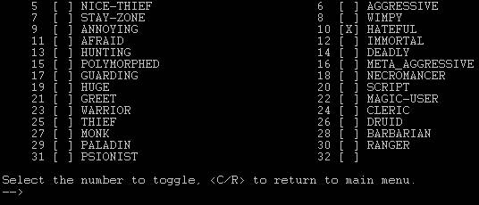

|
Building Mobs For a complete walk-through, check out the Guide to Building on Havok: these pages are intended as quick-references.
With objects, I recommended that you only start with a certain item – the complimentary bread. I’ll make the same recommendation this time: use the basic goblin as your base mob. Load m goblin will bring him up for you. Now type stat goblin. This’ll show you pretty much everything you could want to know about a mob. There’s two pieces of information that are important as to why I suggest the goblin as your base. First: notice where it says ‘NPC Action flags: SENTINEL, ISNPC, HATEFUL’ at about halfway down the list. Sentinel means he won’t wander around, which is incredibly useful. Mobs WILL wander around while you’re editing them if they are not sentinel. Second: just below that, it says “Mobile special procedure: None”. None means the goblin has no special procs attached to it. The alternative is Exists, which is bad. Do not ever use a base mob that has existing special procs. One last thing before you start: type nohassle. With the nohassle flag set, aggressive mobs won’t attack you. Don’t forget to save. Alright then, let’s get into this goblin’s head. Type medit goblin. VIII.2: Step One: Name The name is a set of keywords that a player can use to interact with the mob. For instance, ‘elf elven swordsman’ would be a good one for an Elven Swordsman.
VIII.3: Step Two: Short Description The short desc is used to describe a mob for things like “You attack (short desc)” or “You give (item) to (shortdesc).” Style note: A short desc should be a complete grammatical phrase, but not a complete sentence. It should not start with a capital letter unless the first word is a proper noun. It should not end with a punctuation mark.
VIII.4: Step Three: Long Description The long desc is used to describe how a mob looks in a room. For instance, “A crazy frickin’ demon is standing here staring off at nothing.” Style note: A long desc should be a complete grammatical sentence. It should start with a capital letter and end with a punctuation mark.
VIII.5: Step Four: Description The description is used when a player looks at a mob. A good zone will have mobs with descriptive descriptions (if you will ;^) on its mobs. Include things like physical characteristics, or anything remarkable about it. VIII.6: Step Five: Action Flags Action flags determine what sort of things a mob will be doing. Hit 5 in the main medit meu, and you’ll see this: 
Here’s what they all mean:
Spec … Means the mob has a special proc. It sets automatically if needed. Don’t set this yourself. Sentinel … Means the mob won’t wander around. Scavenger … Means the mob will loot corpses and pick up items from the ground. IsNPC … Means the mob is not a player character. Every mob should have this set. Nice-Thief … I think this means the mob will do things like steal money, but not run around backstabbing people. Aggressive … Means the mob will attack non-sneaky players that it can see. Stay-zone … Means the mob won’t wander out of the zone. Most mobs should have this set. Wimpy … Means the mob is a wimp and will flee from battle when its hitpoints get too low. Annoying … I don’t know, but I bet it sucks. Hateful … I don’t know, but I bet it’s not nice. Afraid … I don’t know. Immortal … Means the mob can’t be attacked or killed. Hunting … I don’t know. Deadly … Gives the mob deadly poisons. Polymorphed … I don’t know. Meta_Aggressive … Means the mob will attack every character it sees on sight, even if they are sneaky. Guarding … Means the mob won’t let players it can see pass by without a fight. Vaious Classes … With a class flagged, a mob will have (and use) all of the skills of that class up to its level. Huge … Means the mob can’t be bashed or backstabbed by anyone smaller than giant size. Script … Do not use this. As of this writing, selecting this option will CRASH THE MUD. Greet … Will make the mob wander around talking to people, like the cityguards in Karsinya. VIII.7: Step Six: Affect Flags The affect flags are a list of different spell affects that you want the mob to always be under the affect of. True sight is essential if you want the mob to always notice players. Hold should paralyze the mob. The others should be easy enough to understand. VIII.8: Step Seven: Alignment Alignment is a number from -1000 to 1000, low being evil, high being good.
VIII.9: Step Eight: Level Level is a number between 1 and 60 that defines what character level the mob plays as. Keep in mind that if you make a mob of a higher level than yourself, you will not be able to mforce him to do anything.
VIII.10: Step Nine: Armor Class Armor Class is a number between -100 and 100, low being perfectly armored, high being not armored at all.
VIII.11: Step Ten: Damage Size of Die This is the first part of defining how much damage your mob does. The damage size is the number of sides the die would have if you were playing a pen and paper RPG. For instance, 3d6 has a damage size of 6.
VIII.12: Step Eleven: Damage Number of Die This is the second part of defining how much damage your mob does. The damage number is the number of dice that get rolled. For instance, 3d6 has a damage number of 3.
VIII.13: Step Twelve: Damage Roll Plus This is the third part of defining how much damage your mob does. The damage roll plus is the amount of damage that gets added to the damage roll from steps ten and eleven. For instance, 3d6+4 has a damage roll plus of 4, while 3d6 has a damage roll plus of 0.
VIII.14: Step Thirteen: Race To define the race of your mob, you need to first type help allrace, which will give you a complete list of all the available races. Find the race you want, remember the number of it, and then input the number in the race section.
VIII.15: Step Fourteen: Number of Attacks This is the final part of defining how much damage your mob does. The number of attacks determines how many attacks per round your mob gets, or more specifically, how many times per round steps ten, eleven, and twelve are added up.
VIII.16: Step Fifteen: Experience Flags Experience flags are tricky business. My recommendation is to enter a number at random, and then stat your mob to see how much experience it has, then go back and try again. The flags are weighted by level of the mob, so an experience flag for one mob will not have the same value as it will for another. Guess and check and guess again, that’s the way to figure this out.
VIII.17: Step Sixteen: Default Position This is the position that the mob will be standing/resting/sleeping/etc in when the zone loads. Almost every mob should have a default position as standing.
VIII.18: Step Seventee: Resistances With this, you can set the things that you want your mob to be resistant to, if any. Resistance means it will take half damage from a source of that type.
VIII.19: Step Eighteen: Immunities With this, you can set the things that you want your mob to be immune to, if any. Immunity means that it will take no damage from a source of that type.
VIII.20: Step Nineteen: Susceptibilities With this, you can set the things that you want your mob to be susceptible to, if any. Susceptibilty means that the mob will take 150% of the damage it would normally receive from a given source.
VIII.21: Step Twenty: Sounds This is an optional category. Whatever line of text you enter here, the mob will reproduce periodically to the room it’s standing in. An example of this is the bartender in the Karsinya Inn, who says various meaningless things from time to time.
VIII.22: Step Twenty-One: Distant Sounds A distant sound is just like a regular sound, except periodically, the mob will display the line of text to all adjacent rooms, but not the one it’s in.
VIII.23: Step Twenty-Two: Sex I’m not your parents, figure it out yourself.
VIII.24: Step Twenty-Three: Hit Roll Plus The hitroll plus is the bonus the mob gets to hit on attacks.
VIII.25: Step Twenty-Four: Common Procedures This is a list of general things that people sometimes like to have their mobs be able to do, like tend a shop or sear peoples’ skin with burning acid. Also, the means to set up basic give-the-item-to-the-mob quests is in here.
VIII.26: Step Twenty-Five: Talk Response This is an awesome little gimmick. Enter the text here, and when a player talks to the mob, the mob will respond with it. Good zones will use this at least occasionally, because really it’s awesome.
VIII.27: Step Twenty-Six: Quest Solved Response If you have the Quest Common Procedure flagged, this is what the mob will say to the character when they bring it the correct item.
VIII.28: Step Twenty-Seven: Quest Wrong Response If you have the Quest Common Procedure flagged, this is what the mob will say to the character when they bring it the wrong item.
VIII.29: Step Twenty-Eight: Max Hitpoints This sets the maximum hitpoints a mob has.
VIII.30: Step Twenty-Nine: Mobile Carried Money This sets how much money the mob has on it.
VIII.31: Step Thirty: SAVE YOUR MOB, FOR GODS’ SAKE! Type msave (mobname) (vnum), where mobname is the keyword you gave your mob in step one, and vnum is the vnum you want to save him as. Note: Always destroy the original mob with purge. The MUD remembers the vnum of the mob, and it thinks that it’s the original, no matter how much you might have changed it. Destroy it and load yourself up a fresh one (after you’ve saved, of course).
Page © 2004 Nathan Walker for HavokMUD
|